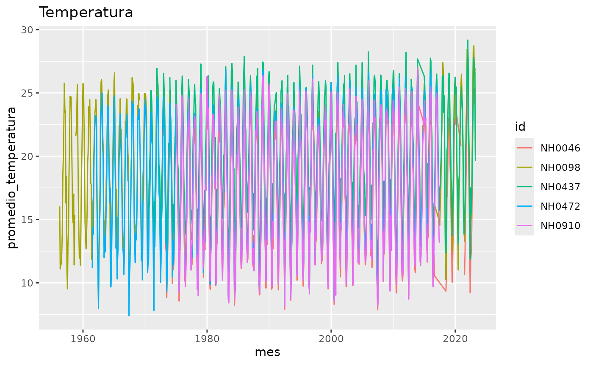
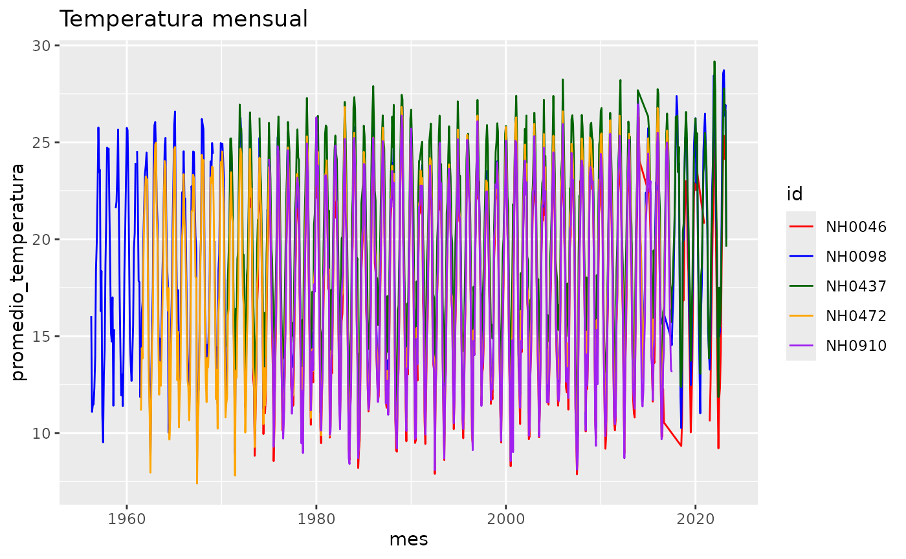
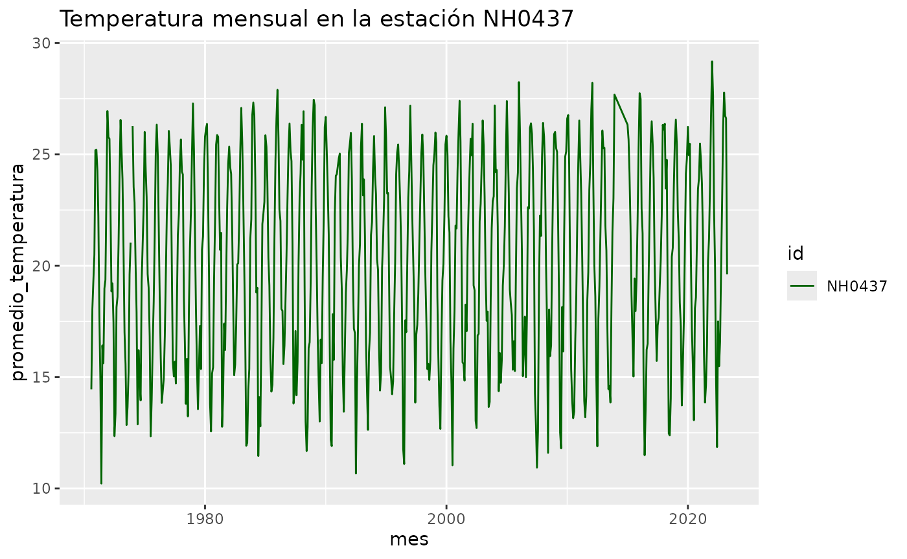

quecaloR ofrece herramientas para trabajar con datos diarios de estaciones meteorológicas del INTA (SIGA). Esta viñeta muestra cómo usar sus funciones y el set de datos que incluye.
Los datos
El paquete trae el set de datos datos_estaciones, con
datos diarios de cinco estaciones identificadas por la columna
id.
dim(datos_estaciones)
#> [1] 95681 35
unique(datos_estaciones$id)
#> [1] "NH0472" "NH0910" "NH0046" "NH0098" "NH0437"Algunas de las columnas más usadas son la fecha, la temperatura de abrigo a 150 cm y la precipitación:
head(datos_estaciones[, c("id", "fecha", "temperatura_abrigo_150cm",
"precipitacion_pluviometrica")])
#> id fecha temperatura_abrigo_150cm precipitacion_pluviometrica
#> 1 NH0472 1961-07-01 11.1 0
#> 2 NH0472 1961-07-02 5.5 0
#> 3 NH0472 1961-07-03 6.0 0
#> 4 NH0472 1961-07-04 NA 0
#> 5 NH0472 1961-07-05 12.4 0
#> 6 NH0472 1961-07-06 11.0 0Para ver el detalle de todas las variables, consultá
?datos_estaciones.
Resumir la temperatura
tabla_resumen_temperatura() calcula el promedio y el
desvío estándar de la temperatura de abrigo a 150 cm de cada
estación.
tabla_resumen_temperatura(datos_estaciones)
#> # A tibble: 10 × 3
#> id estadistico valor
#> <chr> <chr> <dbl>
#> 1 NH0046 promedio 17.3
#> 2 NH0046 desvio_estandar 5.90
#> 3 NH0098 promedio 18.6
#> 4 NH0098 desvio_estandar 5.98
#> 5 NH0437 promedio 20.2
#> 6 NH0437 desvio_estandar 5.77
#> 7 NH0472 promedio 18.0
#> 8 NH0472 desvio_estandar 5.94
#> 9 NH0910 promedio 17.7
#> 10 NH0910 desvio_estandar 6.12El resultado está en formato largo: cada fila es una estación y un
estadístico (promedio o desvio_estandar), con
su valor en la columna valor.
La función también sirve con una sola estación. Para eso basta con quedarse con las filas de la estación que interesa:
nh0437 <- datos_estaciones[datos_estaciones$id == "NH0437", ]
tabla_resumen_temperatura(nh0437)
#> # A tibble: 2 × 3
#> id estadistico valor
#> <chr> <chr> <dbl>
#> 1 NH0437 promedio 20.2
#> 2 NH0437 desvio_estandar 5.77Graficar la temperatura mensual
grafico_temperatura_mensual() grafica el promedio
mensual de la temperatura de abrigo a 150 cm, con una línea por
estación.
grafico_temperatura_mensual(datos_estaciones)
Con el argumento titulo se cambia el título, y con
colores se elige un color para cada estación. Si se usa
colores, tiene que haber uno por estación.
grafico_temperatura_mensual(
datos_estaciones,
colores = c("red", "blue", "darkgreen", "orange", "purple"),
titulo = "Temperatura mensual"
)
También se puede graficar una sola estación:
grafico_temperatura_mensual(
nh0437,
colores = "darkgreen",
titulo = "Temperatura mensual en la estación NH0437"
)
Leer los datos de una estación
leer_estacion() lee el archivo csv de una estación. Si
el archivo no existe en la ruta indicada, lo descarga antes de leerlo.
Necesita conexión a internet la primera vez.
ruta <- tempfile(fileext = ".csv")
estacion <- leer_estacion("NH0437", ruta)La ruta puede ser cualquier lugar donde se quiera guardar el archivo,
por ejemplo "data-raw/NH0437.csv".